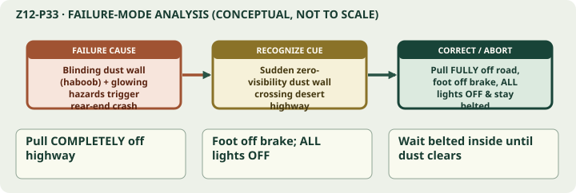

Z12-P33 · Extreme environments · New manuscript
Pull completely off roadways with lights off during blinding desert dust storms
Prevent catastrophic multi-vehicle pileups and respiratory injury when a wall of windblown dust (haboob) strikes.
When it applies · Arid highway travel, desert basins and dry agricultural plains during high-wind dust advisories.
Equipment · Vehicle hazard awareness, closed windows/recirculating air and dust masks/eye protection if outdoors.

Actions
- The moment blowing dust reduces visibility sharply on a road, pull COMPLETELY off the paved highway and shoulder as far as safely possible, set the parking brake, take your foot OFF the brake pedal and turn ALL exterior lights (headlights AND hazards) OFF—trailing drivers subconsciously steer straight toward glowing taillights and ram parked cars.[X08, E16]
- Keep seatbelts fastened, windows rolled tightly up and cabin ventilation switched to recirculate until the blinding dust wall passes completely—never step out onto a zero-visibility roadside.[X08, T01]
- If caught on foot outdoors, move clear of loose blowing debris and roadways, protect eyes and airways with eyewear and cloth/particulate mask and wait low behind stable wind cover until visibility clears.[X08, E16, N07]
Failure recognition · Stopping halfway on a highway shoulder with flashing hazard lights glowing in zero-visibility dust, causing approaching traffic to slam into the rear bumper.[X08, T01]
Verify · Confirm vehicle is fully off the traveled roadway, brake pedal released, all lights switched OFF and passengers belted inside until safe visibility returns.[X08, ED]
Stop or change course · Never attempt to drive blindly through a dense dust wall or step onto an active highway shoulder during a dust storm.[X08, N07]
Evidence and editorial notes
- E16 · NWS · Wind Safety (current web edition)
- Section: Wind Safety > High Wind Hazards · Conditions: Forecast or developing high winds, squalls, or straight-line winds
Support: High winds topple trees, loft debris, and stress lightweight shelters beyond fabric and anchor limits; relocate out of timbered fall zones and into substantial shelter before gusts peak.
Limitations: Tents and tarps lack standardized wind-speed survival guarantees across soil types and pitch angles. · Conflicting evidence: None; avoids unvalidated mph ratings for improvised pitches.
Editorial note: Drives high-wind shelter inspection, guying limits, and abandonment thresholds. · Specialist reviewer: Weather safety and shelter equipment
Primary source · checked 2026-11-24 - N07 · NWS · Fog Safety (current web edition)
- Section: Fog Safety > Visibility Loss and Travel Hazards · Conditions: Dense fog, valley mist, sea fog and blowing-snow whiteout
Support: Fog and whiteout collapse visual landmarks and depth perception rapidly, causing disorientation and unintentional terrain/traffic hazards; halt exposed travel early and rely on verified checkpoints or stay put.
Limitations: Compass bearings alone cannot reveal hidden cliffs, thin ice or drop-offs in zero visibility. · Conflicting evidence: Aligns with B014-P11 whiteout guidance.
Editorial note: Supports whiteout/fog stop thresholds and short-leg navigation boundaries. · Specialist reviewer: Meteorology and search and rescue
Primary source · checked 2026-11-24 - T01 · American Red Cross · First Aid Steps (current web edition)
- Section: First Aid Steps > Check the scene; check the person · Conditions: Lay responder in United States; assess safety before contact
Support: Check scene safety, responsiveness, breathing and immediately life-threatening conditions.
Limitations: Lay guidance does not replace advanced clinical or rescue protocols. · Conflicting evidence: None; universal first-response opening gate.
Editorial note: Anchors scene-safety-first rule across Z01. · Specialist reviewer: EMS and wilderness medicine
Primary source · checked 2026-11-24 - X08 · NWS · Drought Safety (current web edition)
- Section: Drought Safety > Dry Soils, Dust Storms and Extreme Fire Risk · Conditions: Arid regions, seasonal drought and dry-basin travel
Support: Drought dries seasonal springs, hardens soils so sudden rain runs off instantly into flash floods, raises wildfire intensity and produces blinding dust storms (haboobs) where drivers must pull completely off roadways with lights off.
Limitations: Flash-flood risk rises paradoxically on parched hydrophobic desert ground. · Conflicting evidence: None; complements NPS-DESERT and NWS-WILDFIRE.
Editorial note: Grounds desert flash-flood, dust-storm and dry-source cards in Z12. · Specialist reviewer: Meteorology and arid-environment safety
Primary source · checked 2026-11-24
Source lineage · NWS drought and wind safety; new manuscript · Classification · New manuscript.